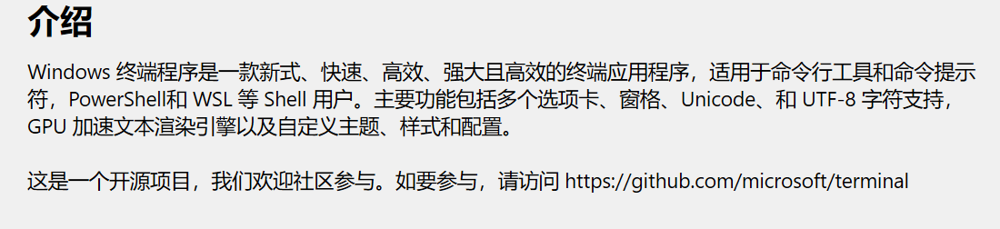
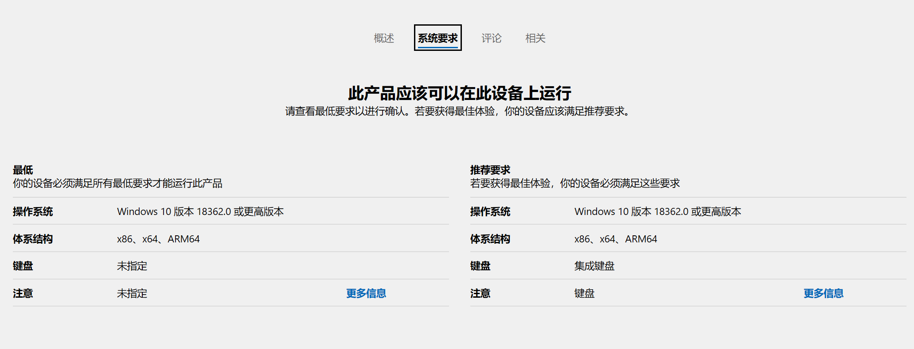
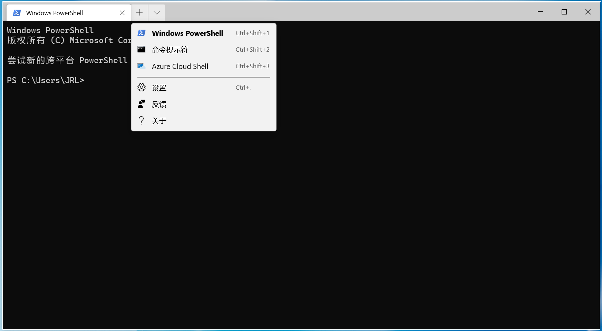

Windows Terminal 简介及安装
是微软为 操作系统打造的全新的 工具。功能强大而且 免费，支持多标签页、富文本、多语言、窗口分割、可配置主题和样式，支持 emoji 和基于 GPU 显卡加速的文本渲染等等。 除了这款全新的命令行工具之外，微软同时还发布了完整内核的 Linux 子系统 (Windows Subsystem for Linux 2)，可以不需要虚拟机直接在 Win 系统里内置并运行 Linux 系统，让用户能直接使用众多现有的极为成熟和完整的 Linux 应用和工具库。
如何安装 Windows Terminal
直接在微软自带的 搜索框中输入 点击搜索按钮即可，进入 页面后直接点击安装。
官方关于 Windows Terminal 的介绍

社区访问链接： https://github.com/microsoft/terminal
官方文档链接：https://aka.ms/terminal-documentation
Windows Terminal 的系统要求

终端的拓展
应用运行，就会出现以下的界面。不但没有官方宣传的那么炫酷的界面，也没有 选项。只有 Windows 自带的 、、 命令行窗口，而且默认打开的是 窗口。

首次打开并没有官方宣传片那么炫酷和强大，是因为 Windows Terminal 是开源的，是可以根据用户自身的偏好高度定制的。